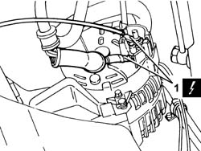
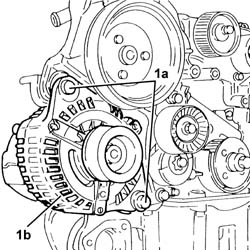
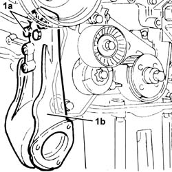
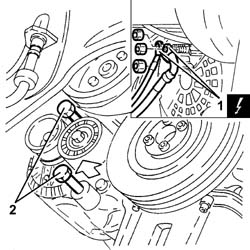
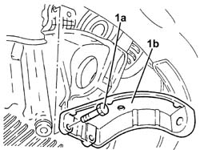
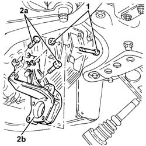
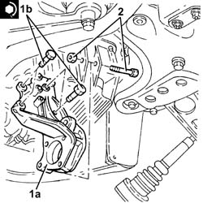
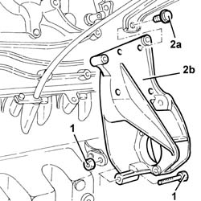

2710A32 intermediate drive shaft bearing support - r + r with intermediate drive shaft removed
- Path
- Procedures > 27 AXLE > 2710 FRONT AXLE > 2710A drive shafts and joints > 2710A32 intermediate drive shaft bearing support - r + r with intermediate drive shaft removed
- Kind
- repair procedure (removal / refitting; the operation number is the code)
- Applies to
- engines: 1.6 TS , 1.8 TS, 1.9 JTD 8v , 1.9 JTD 16v, 2.4 JTD 10v, 2.4 JTD 20v; all production periods
- Interactive page
- https://sloeber94.github.io/elrnDB-a156/en/#/3238023
Applies to: engines: 1.6 TS , 1.8 TS; all production periods
 Removing
Removing
 Refitting
RefittingPosition the vehicle on the ramp
Ensure that the ignition key is in the OFF position, then disconnect the negative battery terminal (-).
 | Name | Connector |
|---|---|---|
- | Battery |
7055B54 under-engine guard - r r .
- 4450B80 cap of one wheel - r+r .
4450B10 Front WHEEL (one) - R.R. .
7055B64 Engine compartment DUST shield in front wheel arch (one), left or right - R.R. .
1092G10 single engine belt r r .
1. Disconnect the electrical connections from the alternator.
| Name | Connector |
|---|---|---|
1 | Alternator |

Applies to: engines: 1.6 TS , 1.8 TS; all production periods
1. Undo the bolts (1a) and move alternator (1b) from the mount.

Applies to: engines: 1.6 TS , 1.8 TS; all production periods
1. Undo the bolts (1a) and remove the intermediate drive shaft bearing mounting (1b).

Applies to: engines: 1.6 TS , 1.8 TS; all production periods
Refitting
RemovingFit the intermediate drive shaft bearing and tighten the bolts to the specified torque to secure.
 | Fastening | Component | Ø | Value (daNm) |
|---|---|---|---|---|
- | Bolt | FRONT DRIVE SHAFT BEARING MOUNT | M8 | 2.5 |
| Fastening | Component | Ø | Value (daNm) |
|---|---|---|---|---|
- | Bolt | FRONT DRIVE SHAFT BEARING MOUNT | M10 | 7.0 |
Fit the alternator and fix it tightening the bolts to the recommended torque.
| Fastening | Component | Ø | Value (daNm) |
|---|---|---|---|---|
- | Bolt | ALTERNATOR ASSEMBLY | M10 | 7.0 |
| Fastening | Component | Ø | Value (daNm) |
|---|---|---|---|---|
- | Bolt | ALTERNATOR ASSEMBLY | M12 | 9.0 |
1092G10 single engine belt r r .
7055B64 Engine compartment DUST shield in front wheel arch (one), left or right - R.R. .
4450B10 Front WHEEL (one) - R.R. .
- 4450B80 cap of one wheel - r+r .
7055B54 under-engine guard - r r .
Connect the negative (-) battery terminal
Remove the car from the ramps.
Applies to: engines: 2.4 JTD 10v; all production periods
Applies to: engines: 1.9 JTD 8v ; all production periods
Refer to op. 2710A35 intermediate drive shaft mount - r r
Applies to: engines: 1.9 JTD 16v; all production periods
Removing
RefittingProceed with removal 1016A10 sound-proofing cover - r + r .
Proceed with removal 1084A16 oil dip stick pipe - r r .
Proceed with removal 1092G10 single engine belt r r .
1. Disconnect the electrical connections from the alternator.
| Name | Connector |
|---|---|---|
1 | Alternator |
2. Undo the nuts for the bolts fastening the alternator and partly release the bolts from the alternator rear mounting and from the intermediate driveshaft bearing support.

Applies to: engines: 1.9 JTD 16v; all production periods
1. Undo bolts (1a) and remove the rear alternator mounting bracket (1b).

Applies to: engines: 1.9 JTD 16v; all production periods
1. Undo the bolt securing the intermediate drive shaft bearing mounting to the oil sump.
2. Undo the bolts (2a) and remove the intermediate driveshaft bearing support (2b).

Applies to: engines: 1.9 JTD 16v; all production periods
Refitting
Removing1. Refit the intermediate driveshaft bearing support (1a) and tighten the bolts (1b) to the recommended torque.
| Fastening | Component | Ø | Value (daNm) |
|---|---|---|---|---|
1b | Bolt | FRONT DRIVE SHAFT BEARING MOUNT | M10 | (Crankcase side) 4.5 ÷ 5.5 |
2. Tighten the bolt securing the intermediate drive shaft bearing mounting to the oil sump.

Applies to: engines: 1.9 JTD 16v; all production periods
Place the lower alternator mounting bracket back in its housing and fix it using the bolts.
Tighten the bolts fixing the alternator to the recommended torque.
| Fastening | Component | Ø | Value (daNm) |
|---|---|---|---|---|
- | Bolt | ALTERNATOR ASSEMBLY | M10 | 4.5 ÷ 5.5 |
| Fastening | Component | Ø | Value (daNm) |
|---|---|---|---|---|
- | Bolt | ALTERNATOR ASSEMBLY | M12 | 6.3 ÷ 7.7 |
Connect the electrical connections to the alternator.
Proceed with refitting 1092G10 single engine belt r r .
Proceed with refitting 1084A16 oil dip stick pipe - r r .
Proceed with refitting 1016A10 sound-proofing cover - r + r .
Applies to: engines: 2.4 JTD 20v; all production periods
Removing
RefittingProceed with removal 1092G10 single engine belt r r .
Proceed with removal 5530A10 alternator - r+r .
1. Undo the bolt securing the intermediate drive shaft bearing mounting to the oil sump.
2. Undo the bolts (2a) and remove the intermediate driveshaft bearing support (2b).

Applies to: engines: 2.4 JTD 20v; all production periods
Refitting
RemovingRefit the intermediate drive shaft bearing mounting in its seating and tighten the bolts.
Tighten the bolt securing the intermediate drive shaft bearing mounting to the oil sump.
Proceed with refitting 5530A10 alternator - r+r .
Proceed with refitting 1092G10 single engine belt r r .
Topics linked from this page (11)
- 1016A10 sound-proofing cover - r + r
- 1084A16 oil dip stick pipe - r r
- 1092G10 single engine belt r r
- 2710A34 intermediate drive shaft bearing support - r + r with intermediate drive shaft removed for versions with air conditioner
- 2710A35 intermediate drive shaft mount - r r
- 4450B10 Front WHEEL (one) - R.R.
- 5530A10 alternator - r+r
- 7055B54 under-engine guard - r r
- 7055B64 Engine compartment DUST shield in front wheel arch (one), left or right - R.R.
- A1B Battery ( BATTERY NEGATIVE )
- A10 Alternator